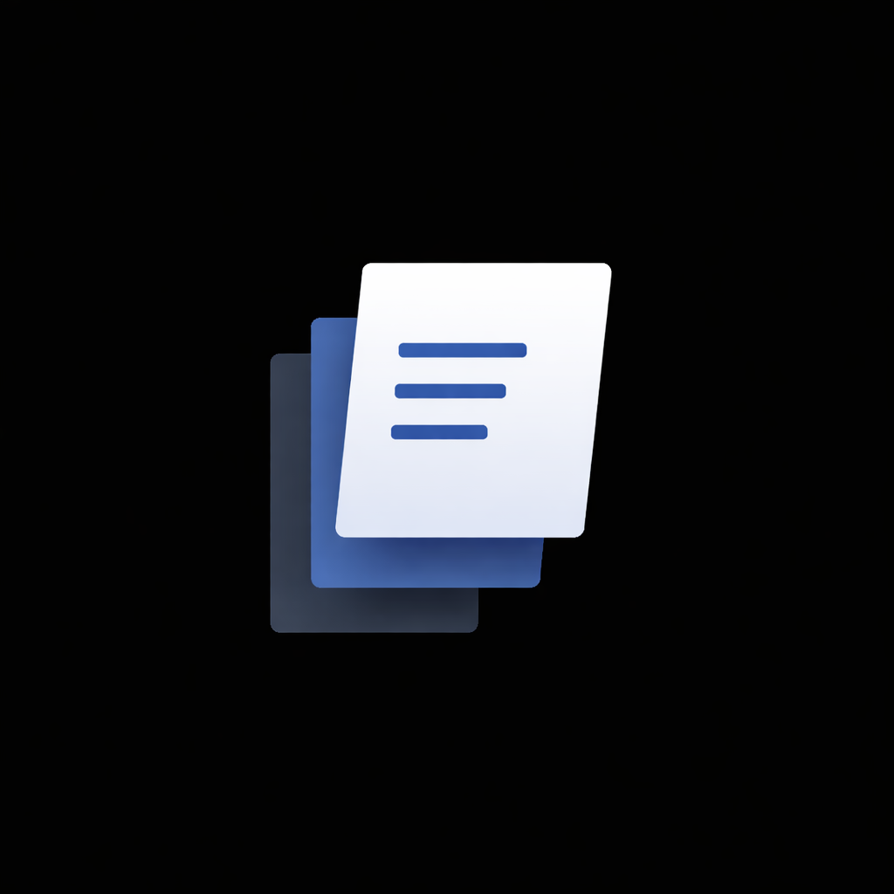
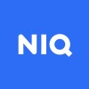

Experience
Sodio Technologies
Data & AI Lead
Leading data engineering and AI efforts for fintech & AI products. Architected and
automated a high-scale Snowflake analytics pipeline processing 12.5B+ rows/month. Led AI
R&D for the company’s first AI-powered product Letest AI, bringing in 15+
clients within 30 days of launch. Managed a 5-member engineering team.
Data Analyst Consultant
Designed and implemented an end-to-end Open Banking ETL pipeline to extract JSON data,
normalize into CSV, and stage into AWS S3, Snowflake, and PostgreSQL. Built data
validation steps, transformation logic, and automated ingestion for early-stage fintech
data flows.

Founder & AI Engineer
ResuLabs
Building an AI-powered career optimization platform that matches resumes to job descriptions.
Developed intelligent analysis and rewriting systems that preserve formatting while optimizing
keywords and ATS alignment to increase interview shortlisting rates.

Data Processing Analyst
NielsenIQ
Performed data validation and QA on large-scale sales datasets from major retailers. Optimized
complex SQL queries and ETL logic, reducing execution times and improving throughput for
downstream reporting. Built and maintained automated validation workflows.